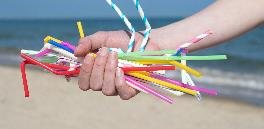
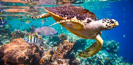
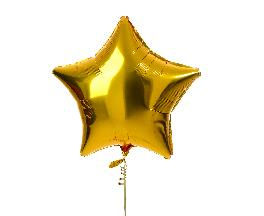
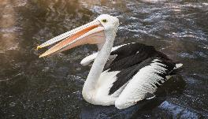
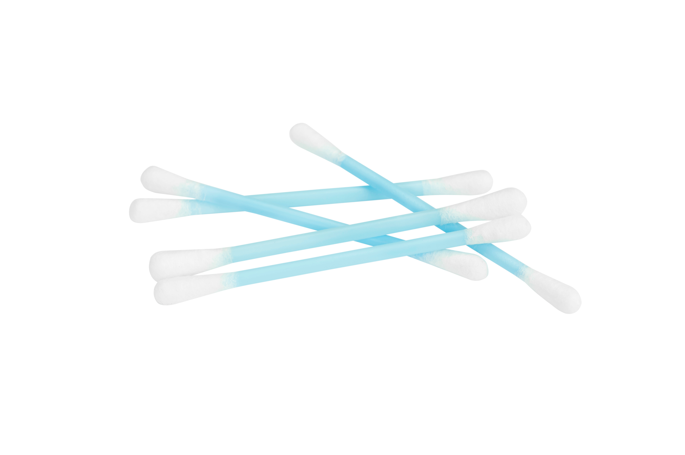
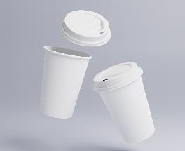
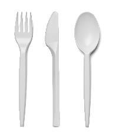
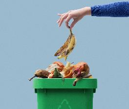

Activity 10: Interview with an environmentalist
Audio: Interview with an environmentalist
Listen to the audio Interview with an environmentalist.
Listen to the audio and answer the questions.
What is the main idea of the audio?
Which sentence is correct?
Which sentence contains an adjective?
Spoken text 2: Single-use plastics in Australia
You will listen to a presentation about the problem with single-use plastics in Australia.
Pre-listening vocabulary
The table below has some vocabulary you need to know before you listen to the audio.
| Picture | Words | Definition |
|---|---|---|
 |
Plastic straw | You use a straw to drink from a container. |
 |
Marine wildlife | Animals that live in the ocean. |
 |
Helium balloon | A balloon that is filled with helium. |
 |
Seabirds | Different types of birds that live in or around the sea. |
 |
Plastic cotton bud | A piece of plastic with cotton wrapped around the end. |
 |
Coffee cup and lid | A cup that you get a takeaway coffee in. |
 |
Plastic cutlery | Cutlery made from plastic. |
 |
Compostable | Compostable means it can be broken down by the environment to become soil. |
Answers
Listen to the audio and answer the questions.
What is the main idea of the audio?
| Choices | Answers |
|---|---|
| Use a drink bottle instead of a plastic water bottle. | |
| You can recycle many things including plastic water bottles. | ✓ |
| Plant more trees. | |
| Air quality in cities is worse than in the country. |
Which sentence is correct?
| Choices | Answer |
|---|---|
| Your local council is just a phone call away. | ✓ |
| The local council away is a phone call. | |
| A phone call away is your local council. | |
| A call to your council. |
Which sentence contains an adjective?
| Choices | Answer |
|---|---|
| What do they recycle them into? | |
| Give them a good rinse before putting them into the recycling bin. | ✓ |
| Thanks for your time. | |
| Take the lids off. |
Show transcript – Interview with an environmentalist
Presenter: It is National Recycling Week, and James Riddle is managing director of Green Planet. It's 16 to 9, James Riddle, good morning.
James Riddle: Good morning to you.
Presenter: James! Can you start by giving us some examples of what's happening in recycling in Australia?
James Riddle: Okay, in Sydney, for example, you've got Coca-Cola. They're now recycling 1 million plastic soft drink bottles every single day.
Presenter: And what do they recycle them into?
James Riddle: Well, they turn them back into brand new Coca-Cola bottles, mineral water bottles, that sort of thing.
Presenter: Ah okay. Are there things that are not able to be recycled?
James Riddle: Well, there are certain things. People should always take the lids off bottles because they can't be recycled. They are a different kind of plastic. There are two types of plastic that you can recycle. One is the plastic milk containers. You can recycle those in most areas. Again, take the lids off.
Presenter: Okay.
James Riddle: And then there's soft drink bottles. What we call PET. Uh, things like you know, the Coca-Cola we were talking about. That kind of bottle can be recycled.
Presenter: I see. What about glass? All glass is recyclable, isn't it?
James Riddle: The only glass you should put in your recycling bins is just glass bottles or glass jars. And with any jars, whether they're plastic or glass, give them a good rinse before putting them in the recycling bin.
Presenter: James, if people want to know more about recycling, find out what they can and can't recycle, who should they contact?
James Riddle: Your local council is just a phone call away. Their job is to give you advice, make sure that you recycle correctly.
Presenter: All right, okay. Thanks for your time.
James Riddle: Thank you.
Presenter: That's James Riddle, managing director of Green Planet. It's National Recycling Week, and it's 8 and a half minutes to 9.
*Background music*